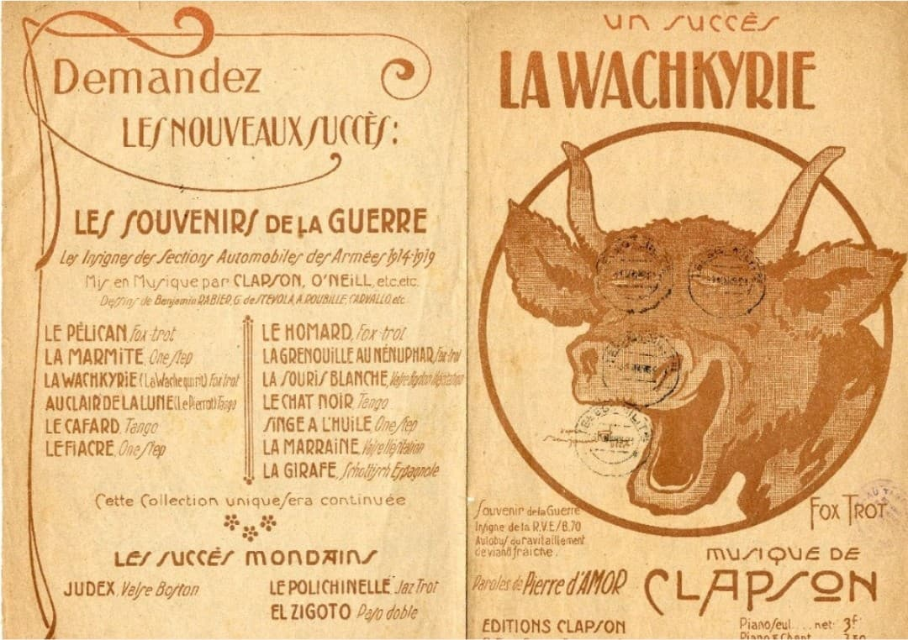
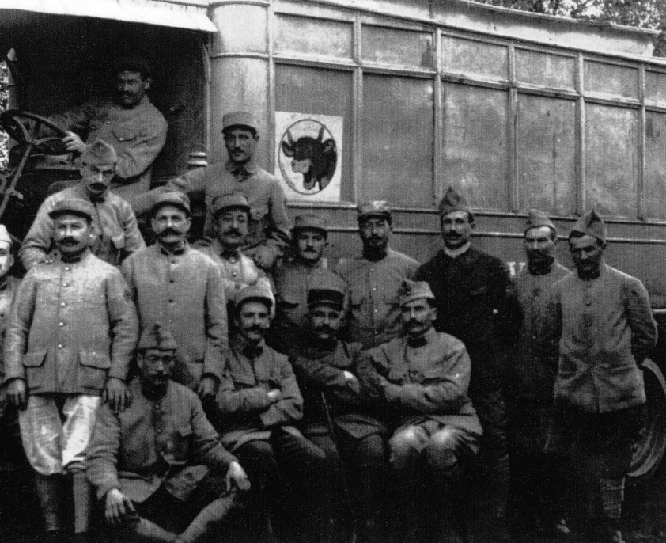
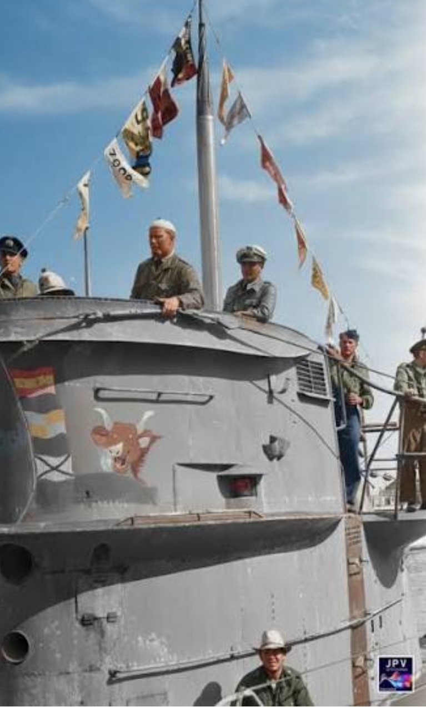
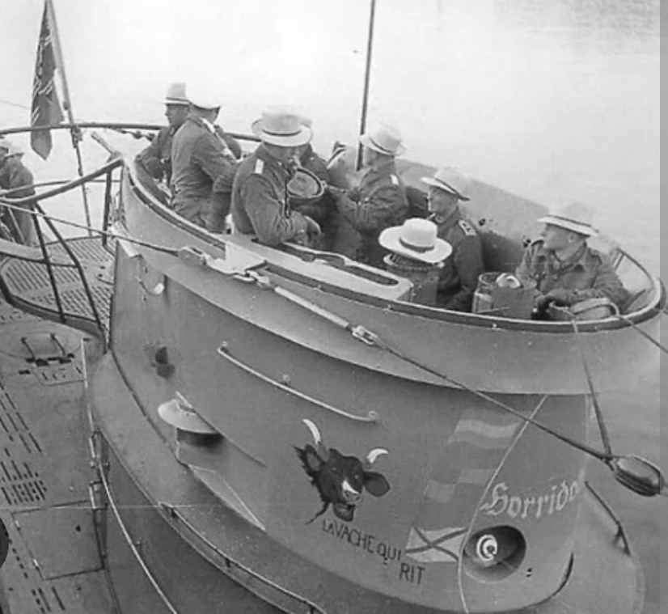

Cette fiche retrace l’histoire d’un symbole militaire inattendu : La Vache qui Rit. Né dans les unités françaises de ravitaillement durant la Première Guerre mondiale, cet insigne humoristique réapparaît plus de vingt ans plus tard sur le kiosque du sous-marin allemand U‑96. Un contraste historique unique, entre logistique française et guerre sous-marine.

Pendant la Première Guerre mondiale, les sections automobiles de ravitaillement utilisaient des insignes humoristiques pour représenter leurs unités. Ces symboles, souvent dessinés par Benjamin Rabier, servaient à :
L’insigne de La Vache qui Rit, créé vers 1916, devient rapidement l’un des symboles les plus connus du ravitaillement français.
Les partitions illustrées, affiches et photographies de véhicules décorés témoignent de l’importance de cet humour dans la vie quotidienne des soldats. La Vache qui Rit devient un symbole populaire du front, associé à la nourriture, au ravitaillement et à la bonne humeur.

Le U‑96 est un sous-marin allemand de type VII‑C, mis en service en 1940. Comme de nombreux U‑Boot, il porte un insigne personnalisé sur son kiosque. Dans son cas, l’emblème représente une vache stylisée accompagnée de l’inscription « La Vache qui Rit ».
Ce choix interne à l’équipage s’inscrit dans la tradition des symboles navals, souvent humoristiques ou caricaturaux, utilisés pour identifier les unités.

Pour les Français, l’apparition de La Vache qui Rit sur le kiosque du U‑96 crée une ironie historique forte. Un symbole né dans le ravitaillement français, associé à l’humour et à la nourriture, se retrouve sur une arme de guerre allemande engagée dans l’Atlantique.
Cette situation produit une incongruité visuelle : un dessin léger, presque comique, placé sur un sous-marin réputé pour ses opérations redoutables. Dans la mémoire française, ce décalage est parfois interprété comme une forme de « clin d’œil involontaire », où un symbole français traverse les époques et réapparaît dans un contexte où personne ne l’attend.
Certains historiens soulignent que ce choix d’emblème peut donner l’impression d’une maladresse symbolique de la part de l’équipage du U‑96 : un insigne humoristique français utilisé sans en connaître l’origine, créant un contraste qui, vu depuis la France, peut être perçu comme désavantageux pour l’image du sous-marin.
Cette lecture n’est pas un jugement sur un peuple, mais une interprétation mémorielle qui met en lumière la manière dont un symbole français a traversé deux guerres et s’est retrouvé dans un contexte où il semble presque « dominer » symboliquement l’image du U‑96.